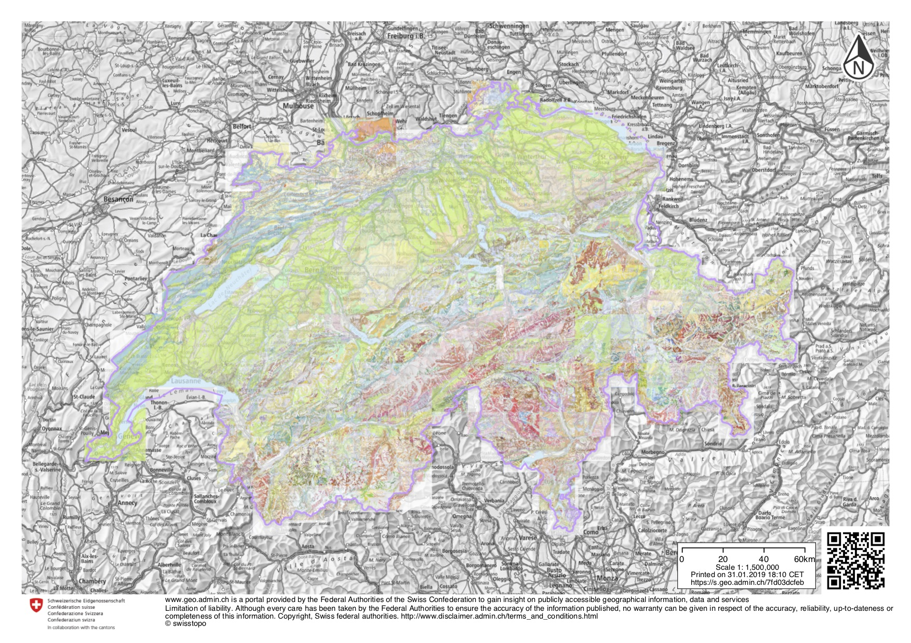

by Anna Thompson
In the summer of 2018, the ISU geology department sponsered a fieldtrip to Switzerland. This page details that day that I lead the class to the foot of Findel Glacier, above Zermatt, for an introduction to glaciology.
Findel Glacier and Zermatt are in southwestern Switzerland at the eastern base of the Matterhorn.

From Zermatt, we took a funicular Sunnega, and a gondola from Sunnega to Blauherd. We walked to Fluhalp hut, where we stayed for several days, and could access Findel Glacier by walking down and around the steep lateral moraine.
I used the maps from this website, Swiss Topo, to plan the trip while still in Iowa. The detailed countour lines reveal the boundaries of the moraines and steep sections of the valley floor.